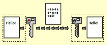
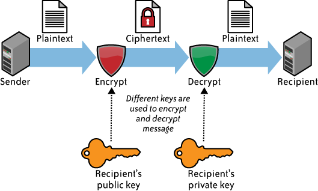
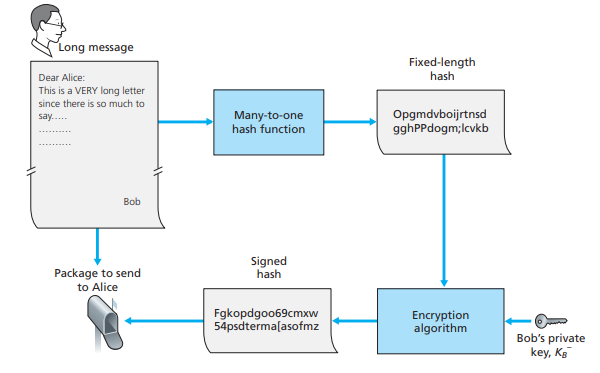
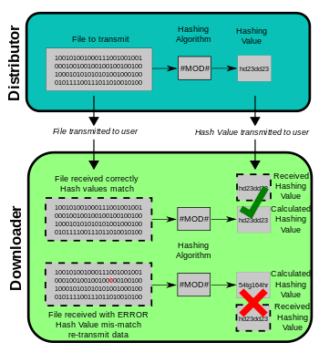
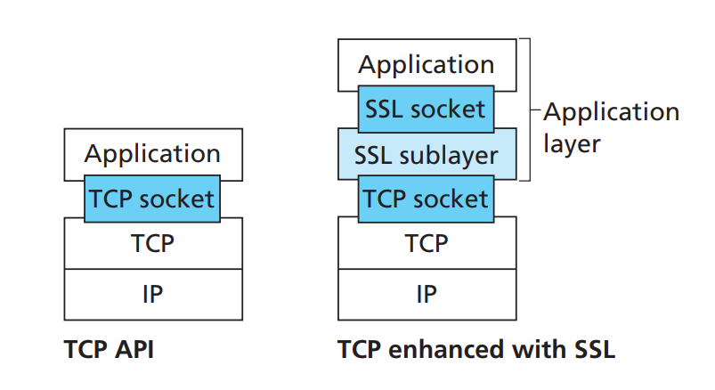
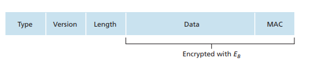
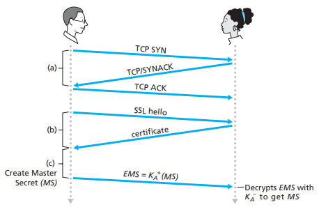

写在最前面
网络安全是个很大的话题，它包括了网络加密、数据真实性认证、终端身份认证、防火墙等技术，而网络加密、数据真实性验证，终端身份认证，则是网络安全中的重要一环，学习和掌握它具有重要意义，通过学习网络安全的相关知识，有助于我们理解生活中一些关于网络安全方面的现象。这样也可以做到知其然，并且知其所以然。最近一段时间，我发现自己对这块的掌握并不牢靠，于是参阅了一些资料和论文，主要的参阅资料是《Computer Networking A Top-Down Approach》的第八章Secure In Computer Networks，也包含了多篇paper。本文主要阐述网络加密、数据验证、身份验证的一些基本知识，并不涉及网络安全的其他方面。由于本人水平有限，有不正确的地方，欢迎批评指正，最后原创不易，转载请注明出处。
网络安全技术简介
为什么需要网络安全技术？
互联网最初的设想，是让一部分人共享一个局部网络，而使用者均是可信赖的人，因此网络在设计之初，并没有考虑到安全方面的问题。随着因特网技术的发展，现在几乎将整个世界互联在了一起，任何一端发送数据包，均要经过很多不可信赖的网络，而在通过这些网络的过程中，数据包可能被截获、篡改，甚至是伪造。为了应对这种问题，我们需要一种技术，做到数据加密后不可破解(Confidentiality)，辨别数据是否被篡改(Message Integrity)，发送者、接受者身份不可被伪造(End-point Authentication)。这种技术，就是本文要探讨的网络安全技术。
什么是网络加密？
假设网络上，有两个以上的人，通过一个通信软件进行信息交换，那么他们输入的即将用于传输的数据，被称之为明文（cleartext or plaintext），通过某种加密算法e(x)运算后， 得到密文（ciphertext），密文在网络中传输，到达对端后通过解密函数d(x)获得明文，于是就完成了整个加密解密的过程。也就是说，假设数据为m，加密函数为e(x)，解密函数为d(x)，密文为c，则有
- 发送方输入要发送的数据m
- 发送方将数据m通过加密函数，e(x)对m进行加密，则有c = e(m)
- 发送方将加密数据发送到网络
- 接收方收到密文c
- 接收方通过解密函数d(x)解密密文c，则有m = d( c )
上述流程，阐述了网络加密解密的基本流程，为了使整个流程更易于理解，现在假设m为”hello world”字符串，e(x)则是将m的ASCII码加1后输出密文c，然后将密文c传输给对端， 对端通过解密函数d(x)将c内的ASCII码全部减一后，就能得到明文m，于是有：
- 输入m = “hello world”
- 使用e(x)加密m，得到c = “ifmmp!xpsme”，并将c通过网络传输给对端
- 对端接收到加密数据c以后，通过解密函数d(x)，将c中每一个字符的ASCII值减1，得到原文m，即m = d( c )
上述的例子，简述了简要的加密解密流程，当然举例用的加密算法也过于简单，不过这里的目的是给出一个概要说明，给读者梳理加密和解密流程的基本概念。后面我们将以应用层使用的视角，讨论一下加密算法。
什么是数据真实性验证？
如果网络上，两个正在通讯的实体A和B，正在进行数据通信，当A发送数据给B时，数据可能被中间人截获，并篡改后再发送给B。举一个Top-Down这本书上的例子，假如A发送信息”I love you”给B，此时信息被C截获，修改为’I don’t love you’后，再发给B，那么B此时无法辨别该信息是否真的由A发送。因此这里需要一种验证机制来验证数据是否被篡改。要达到这个目标，我们一般使用一种专门用于hash值计算的hash函数，不同的数据通过hash函数计算，能够（极大概率）获得不同的hash值，因此当传输中的数据被改变时，那么新计算的hash值则（极大概率）不同于原来的值，因此可以辨别数据是否被篡改。于是数据传输流程就变成了如下步骤
- A输入数据m
- A通过函数h(x),计算得到m’ = h(m)
- A将输入数据和hash值，放入原数据的尾部，得到(m, h(m))并将数据发送给B
- B收到数据(m, h(m))后，通过h(x)计算数据m，得到h(m)‘，并将h(m)‘和h(m)进行对比，如果相等，则说明数据未被篡改，否则数据被篡改
上述例子，展示了进行数据真实性验证的流程，然而它的弱点也是非常明显的，假设有一个监听者C，冒充A发送一个数据m，并且m在中途没有被修改，那么当B收到数据时，按上述步骤去验证，是无法验证出哪里不对劲的，因此，我们在进行hash运算的时候，需要双方共同约定一个secret值，在进行hash值计算时，需要将数据m和secret s一起放入到hash函数内，计算hash值，这个值被称之为MAC（message authentication code）[1]，因为这个secret是A和B双方共同约定的一个值，因此监听者C很难冒充A，发送一个数据包给B，于是流程则变为如下所示的步骤：
- A输入数据m
- A通过函数h(x)和secret s，计算hash值h(m + s)
- A将hash值，插入数据m的尾部，得到(m, h(m + s))
- A将该数据发送给B
- B收到数据后，通过将数据m和共同约定的s，计算hash值h(m + s)’
- 对比h(m + s)‘和h(m + s)，如果相等，则表示数据未被篡改，否则表示数据被篡改
上述例子，不仅给出了检验数据是否被篡改的方案，也给出了终端身份认证的一种方案，hash计算，是一种密码学技术，但不是一种加密技术。
什么是终端身份认证？
终端身份认证，本质就是通信双方，要确保通信对象是其本人，而非冒充的。终端认证的方式有很多种，如上节所示的那样，通信双方共同约定一个secret，那么接受的一方很容易验证数据是否伪造的。在使用对称加密的通信中，双方一样要约定一个key值，只要key不被泄漏，数据很难被破解以及伪造，也达到了认证的效果，为了提升通信的安全性，一般先将要发送的数据，通过hash函数计算出hash值后，再加密发给对方，这样就同时达到了数据不可被破解、数据认证和身份认证三个目的。在使用非对称加密的情形中，我们首先要验证对方的public key，也就是去第三方机构验证public key是否其本人，以达到身份认证的目的。
加密（Encryption）和哈希（Hashing）的区别
加密在维基百科里的定义如下所示[2]：
In cryptography, encryption is the process of encoding a message or information in such a way that only authorized parties can access it and those who are not authorized cannot. Encryption does not itself prevent interference, but denies the intelligible content to a would-be interceptor. In an encryption scheme, the intended information or message, referred to as plaintext, is encrypted using an encryption algorithm – a cipher – generating ciphertext that can be read only if decrypted. For technical reasons, an encryption scheme usually uses a pseudo-random encryption key generated by an algorithm. It is in principle possible to decrypt the message without possessing the key, but, for a well-designed encryption scheme, considerable computational resources and skills are required. An authorized recipient can easily decrypt the message with the key provided by the originator to recipients but not to unauthorized users.
加密的本质，就是将信息转换为一段不易阅读的字符，加密后数据的长度是任意的，它要求只有被认证的一方才能够将密文解密，并获得原文，其他人无法获取原文信息。加密算法有两种，一种是对称加密，即收发双方都拥有一个共同的key（即加密和解密都用同一个key）拥有key的一方则是被认证的一方。另一种则是非对称加密，这种方式将会有一个key对，一个公钥和一个私钥，公钥可以在网络上传输，并且通过公钥加密，只有私钥才能解密，加密后的密文可以还原。加密技术，是防止他人窃取要通过网络传输的机密信息的一种有效手段。
图1 加密和解密流程
哈希函数，引用www.securityinnovationeurope.com内的一段定义[3]：
A hash is a string or number generated from a string of text. The resulting string or number is a fixed length, and will vary widely with small variations in input. The best hashing algorithms are designed so that it’s impossible to turn a hash back into its original string.
密码学中的哈希函数，是通过一串文本字符，将其生成固定长度的字符串或者整数值，当输入的内容发生轻微的变化时，他的结果也往往大相径庭，而且与加密不同的是，经过hash函数计算的字符串，几乎不可能还原成原来的字符。哈希函数，一般应用在数据真实性的验证上，而不是保证数据不会被破解。
 图2 任何字符进行hash计算，都会变成固定长度的一组字符串或数值
图2 任何字符进行hash计算，都会变成固定长度的一组字符串或数值
尽管hasing和encryption有诸多相似之处，他们终究不是一个东西，首先第一点区别是，加密后的密文的长度是不定的，而hash值则一定是相同长度的。第二点是，加密后的密文是可以还原的，而经过hash函数计算后的hash值，是不能被还原的。最后一点，也是最重要的一点，则是用途上不同，加密技术，是为了保证第三方无法获得密文的原文，而hash函数，则是为了保证数据的真实性可以得到验证。
网络加密技术
上一节，我们对网络安全的加密、认证机制，作了简要的概述，接下来我们将会深入这几个方面进行论述，本节主要集中在探讨加密算法。本节我们会先探讨传统的加密方式，然后再探讨现代加密算法，包括对称加密和非对称加密。
传统的网络加密方式
这一小节，展示的加密算法，其实在当今看来，其实并不安全，但也算的上是加密技术的起源思想，阐述这些内容，有助于我们理解什么是加密。
字母偏移
假设我们的明文，只是包含a-z这26个字母，那么本段将展示的加密算法，则是基于本字母，向后偏移N位（假设N=5），那么，对应关系则有：
| 原来的字母 | a b c d e f g h i j k l m n o p q r s t u v w x y z |
| 加密后的字母 | f g h i j k l m n o p q r s t u v w x y z a b c d e |
表1
此时，加密和解密都遵循这一张表的对应关系，对于加密函数e(x)和解密函数d(x)而言，对所有处于a-z范围内的明文，每个字母都会在上表中找到对应的字母。现在假设网络上A和B两个人进行通信，他们交换的信息只包含a-z的字母，于是有:
- A输入明文m = “i love you”
- 在A发送信息给B前，先通过查找表1，计算e(m) = m’，则m’ = “n qtaj dtz”
- A将加密后的m’通过网络发送给B
- B接收到m’后，通过解密函数d(x)，计算得到d(m) = ‘i love you’ = m
上面的论述，展示了最原始和最简单的加密算法，仅仅只是通过偏移字母来进行加密，加密函数e(x)和解密函数d(x)一样，都是通过查找表1中的对应关系，来进行加密和解密的，唯一的区别则是，加密时，e(x)通过原来的字母，作为key查找加密后的字母。而解密函数d(x)则是以，加密后的字母为key，查找原来的字母。不论N是多少，这种方式都是相当不安全的，因为除了原来的字母排列，我们只需要再试25次，就能够找到N的值到底是多少，找出N到底是多少，甚至可以通过人工来排列，也不会花费太多的时间。
生成乱序字母表
为了进一步加强加密算法的安全性，这里将讨论一种比上面一种稍微更复杂一点的算法，所谓更复杂，其实就是要增加更多的可能性（上述算法包括原字母排列，也只有26种可能性），其核心思想仍然是生成一张字母映射表，加密函数和解密函数，仍然和上一小节讨论的那样，查询该表进行加密和解密。但是不同于上面的做法，每一个字母都是偏移固定的位数，这种算法是：
- 先从26个字母中，随机一个字母对应a
- 然后再从剩余的25个字母中，随机一个对应b
- 然后再从剩余的24个字母中，随机一个对应c
- 依次类推直至每一个字母，都有唯一的一个经过随机筛选的字母与之对应，并且是一一对应
于是我们可以得出类似下表的映射关系
| 原字母表 | a b c d e f g h i j k l m n o p q r s t u v w x y z |
| C1 | s e l j u q g h m t r p f d x v i b o k z w a n y c |
| C2 | s c x q f p l m t y b g z h a u w d v i n o j k e r |
| C3 | s r w d i v n t f h x g p c k b o m z u a q l j e y |
| C4 | v z k t h q u d e a m g j y r s c p x n w i l b o f |
| C5 | k y t w c o u f m l e r j a q b s d v x i h z n p g |
| … | … |
表2
如上表所示，原字母表，可以生成一个随机的乱序的字母表与之对应，每个字母，都有唯一的一个字母与之对应，而不会重复对应。因此他有26!=403291461126605635584000000种可能性，现在看来，这种方式比前一种方式要安全的多，起码从人工角度来看，在有限时间内破解加密消息是极为困难的。现在假设随机生成的映射表是C1，网络上要进行通讯的两个实体A和B共享这个C1表，于是有：
- A输入明文m = ‘i love you’
- A通过加密函数e(x)计算密文，通过查询原字母表和C1的映射关系，则有e(m) = ’m pxwu yxz’ = m’
- A将密文发送给B
- B收到m’后，使用解密函数d(x)，通过查询原字母表与C1的映射关系，可以将m’还原为m，于是整个加密解密流程完成
从上述流程来看，和我们上面介绍的加密和解密算法完全一致，只是映射表生成的方式改变了，然而就是这微小的改变，却显著增加了破解的难度。而之所以破解难度显著上升，是由于组合可能性的以万亿亿亿亿倍的级别的增加为基础的，也就是说可能性越多，即便加密解密算法相同，也会增加破解难度。
多张乱序字母表，按一定顺序加密
除了上节论述的加密方式，还有一种更加改进的加密方式，就是如表2所示，生成多张不相等的乱序字母表C1~C5，然后生成一个key，key的值为C1~C5的随机组合数组，如{ C2, C1, C5, C4, C3, }，则在加密的时候，每个字母按照顺序，先后按照顺序，找到对应的乱序表，查找对应的输出字符，如此循环往复。本质就是，要采用哪个表来替换，该逻辑也很简单，假设字母在原文中所处的位置为index，etbl_index为key数组的下标，于是有：
当index % len(key)不为0时：
etbl_index = index % len(key)
当index % len(key)为0时
etbl_index = len(key)比如明文’i love you’中，i为第1个字母，那么key列表下标则为1 % 5 = 1，那么它的字母替换表则是key[1]，也就是C2；l为第2个字母，则它所采用的字母表下标为2 % 5 = 2，那么它的字母替换表则是key[2]也就是C1；依此类推，o、v、e、y、o和u，分别是第3、4、5、6、7和8个字母，因此他们对应的key列表下标分别是3、4、5、1、2、3，在key列表找，则是C5、C4、C3、C2、C1和C5。
解密的时候，也按照该顺序表，找到对应的字符进行解密，还原原文。现在假设网络上两个通信实体A和B进行加密通信，他们共享如表2所示的乱序字母表（包含原字母表和C1~C5），使用key = { C2, C1, C5, C4, C3, }，则有：
- A输入明文m = “i love you”
- A将明文m通过e(x)加密函数进行加密，并且输入key，于是有e(m, key) = m’ = “t pqii exi”
- A将密文m’通过网络发送给B
- B收到密文后，通过输入密文m’和key给解密函数，于是有d(m’, key) = m = ‘i love you’
这种加密方式已经引入了key的概念了，尽管这种方式已经极大提升了安全性，但是在当今的计算机世界中，破解上述的方式仍然不是一件非常困难的事情，不过这里强化了加密的基本概念，后面我们会继续探讨被广泛使用的加密算法，包括对称加密和非对称加密。
现代加密方式
基于block加密
上节，我们介绍了通过生成乱序字母表的方式进行加密和解密处理，但是这种方式有一个问题，就是无法通过统一的乱序表，对世界上各种语言进行加密和解密，这样的话就需要为每一种语言生成一个乱序表，这并不是一件很高效的事情。由于我们所有输入计算机的文字和数据信息，都是以二进制的形式表示，如果我们的加密算法是针对bit位，而不是文字本身，那么就可以无视信息是何种语言。这种方式就是我们要讨论的，基于block的加密。
我们要进行加密和解密的信息，以若干位为一个block，最简单的加密方式，仍然是为每一个block生成一个乱序表。block的bit位越多，其组合也越多，破解难度也越大，但是这种方式占用的内存也越多。现在我们假设一个block为3个bit位，此时，我们为二进制数值000从000~111随机一个值，作为其替换的数值；然后为001从剩下的7个数值中随机一个，作为其替换值；接着为002从剩下的6个中随机一个，依次类推，我们可以得到类似表3的映射关系。
| 输入 | 输出 |
|---|---|
| 000 | 110 |
| 001 | 111 |
| 010 | 101 |
| 011 | 100 |
| 100 | 011 |
| 101 | 010 |
| 110 | 000 |
| 111 | 001 |
表3
通过上表，我们可以知道每一个block都有一个唯一的从二进制数值000~111范围内的值与之对应，因此所有的组合一共是(2^3)! = 8! = 40320种组合。虽然以3bit为单位的block，破解它是轻而易举的事情，如果block以64bit为单位，那么破解难度会比以3bit为block的难度要高，一共有(2^64)!种组合，但是同时生成乱序表所消耗的时间，和加密解密时，占用内存也是相当惊人的，它大约占用2^64 * 8 = 128EB，我想未来10年内，这么庞大的内存可能都无法普及。当今在世界范围内广泛使用的加密解密算法(如AES算法)，并非以此种方式做简单替换，而是将block直接与key作xor运算[4]。
对称加密
上一节，我们介绍了基于block加密的一些思路，并且引进了前面章节讨论通过替换的方式进行加密的方法。但这也遇到了一些问题，如果block太长，内存占用就过大，如果block太短，那么又容易破解，为了应对日趋严峻的网络完全局势，通过秘钥(secret key)加密的方式应运而生。目前通过秘钥加密的算法主要有两种，一种是对称加密，还有一种则是非对称加密。本节主要介绍对称加密，并在下一节介绍非对称加密。
对称加密概述
对称加密的本质，就是通信双方使用相同的加密和解密算法，相同的秘钥，进行加密和解密。假设通信双方A和B的加密函数为e(x)，解密函数为d(x)，秘钥为k，明文为m，密文为c，则有:
- 发送方A输入明文m
- 发送方A通过加密函数e(x)和秘钥k，加密m，于是有e(m, k) = c
- 发送方将密文c发送给接收方B
- 接收方B通过解密函数d(x)和秘钥k，解密c，于是有d(c, k) = m
 图3
图3
现在我们知道了，明文要通过秘钥进行加密，那么如何在不借助乱序表替换的方式，进行加密和解密运算呢？实际上，现今在世界范围内常用的对称加密算法，广泛使用key和数据block进行xor[5]运算进行加密和解密的。我们来看一个最简单的例子，假设明文数据的16进制表示为0x1234;key为0x5678;数据block和key均为16位，最简单粗暴的加密方式就是明文直接和key进行xor运算[6]，则有：
| 十六进制值 | 二进制值 |
|---|---|
| 0x1234 | 0001001000110100 |
| 0x5678 | 0101011001111000 |
| xor结果 | 0100010001001100 |
表4
数据通过和key进行xor运算，得到加密数据的十六进制表示为0x444C，现在我们将加密后的数据，和key值做xor运算，则有：
| 十六进制值 | 二进制值 |
|---|---|
| 0x444c | 0100010001001100 |
| 0x5678 | 0101011001111000 |
| xor结果 | 0001001000110100 |
表5
如上所示，密文通过和key进行xor运算后得到的十六进制为0x1234，得到原文，通过上述的例子，这里想引出一个结论，则是明文通过和key进行xor运算，得到的密文能够通过与key进行xor运算拿回明文。
通过上述的方式，我们确实可以得到一个简单的加密和解密算法，但是这种算法并不安全，我们有很多手段获得密文和明文的关系，如某些常用词如ing，ed，ty等后缀入手，通过统计的方式查找明文与密文的关系，最终可以达到部分甚至全部破解key的效果，为了应对这种情况，当今通常会先对数据拆分block，然后加密会进行多轮，每轮从原始的key中派生一个roundkey出来，和每一个数据block进行xor运算，最后将密文发送给通信的另一方，另一方接收到以后，也会根据原始的key派生出roundkey，进行xor运算，并执行和加密一样多轮的次数，最后获得原文。在这方面，做的最好的则是AES算法，它不仅仅只是为每一轮加密和解密生成一个roundkey，还进行了其他操作，这里不对具体的对称加密算法，做详介绍，读者可以参照Advanced Encryption Standard (AES) Algorithm to Encrypt and Decrypt Data 了解更多关于AES算法的信息。
对称加密的弱点
对称加密算法，有速度上的优势，但是它的安全是依赖于通信双方已经拥有同一个秘钥的基础上，而当两个从未通信过的两端，如何去同步这个双方共同使用的key呢？从目前的手段来看，通信双方只能通过如线下交换的方式，获得通信的秘钥，但是在互联网上，双方在不可能碰面的情况下，通信双方就无法安全地同步秘钥给对方。为了解决这个问题，我们需要用到非对称加密，即公钥加密，私钥解密，公钥可以在网络中被所有人知道，而私钥需要接收方保存好。公钥加密的密文只能通过私钥进行解密。下一节我们将探讨非对称加密算法。
非对称加密
非对称加密概述
上一节，我们讨论了对称加密，并且也阐述了对称加密的弱点，就是key无法在网络上安全地同步，为了解决这个问题，于是非对称加密算法被发明出来。非对称加密，每个用户会在通信前，生成一个秘钥对，公钥和私钥，其中公钥负责加密，而私钥负责解密。公钥可以在公网上传输，可以被任何人截获，私钥需要所有者自己保存，并且不能外泄。现在假设通信双方A和B需要进行信息交换，公钥为K+，私钥为K-，加密函数为e(x)，解密函数为d(x)，明文数据为m，密文数据为c，于是有：
- 发送端A向接收方B请求B的公钥K+
- 发送端A获得接受方B的公钥K+
- 发送端A输入明文m
- 发送端A通过加密函数e(x)和K+加密明文m，于是有e(m, K+) = c
- 发送端A将密文c发送给接收方B
- 接收方获得密文c，通过解密函数d(x)和私钥K-，对c进行解密，于是有d(c, K-) = m
图4
非对称加密原理：以RSA算法为例[7]
当前世界范围内，使用最多的非对称加密算法则是RSA算法，本节我们将会详细讨论RSA算法的一些基本原理。
(1) RSA算法流程
- 生成两个大质数p和q，且p和q不相等，p和q不可外泄
- 令n = pq，z = (p-1)(q-1)
- 选择一个数值e，令e < n，且gcd(e, z) = 1 (gcd意为greatest common divisor最大公约数)，则(n, e)为公钥的组成部分
- 选择一个数值d，令ed mod z = 1，则(n, d)为私钥的组成部分
- 现在发送端A，输入一段信息，并以十进制值m表示它，并且m < n（任何字符在计算机中，都以二进制数值表示，而二进制信息可以被表示为任何信息）
- 发送端A对m进行加密，则有m^e mod n = c
- 发送端A将密文c发送给接收方B，接收方B收到密文c后，通过私钥进行解密，则有c^d mod n = m，将数据还原
上面流程，阐述了RSA算法的的基本流程，现在们通过一个实例来直观感受一下，借助《Computer Networking A Top-Down Approach》第8章中的例子，假设p = 5，q = 7，则有：
- 令p = 5，q = 7
- 则有n = pq = 5 * 7 = 35，z = (p - 1)(q - 1) = (5 -1)(7 - 1) = 4 * 6 = 24
- 令e = 5，因为gcd(e, z) = gcd(5, 24) = 1，且e < n，因此e满足条件
- 令d = 29，因为e * d mod z = 145 mod 24 = 1，因此d也满足条件
- 输入字符!，!的ASCII码为33(注意33 < n)，使用公钥(n, e)加密则有33^5 mod 35 = 3
- 然后对私钥对密文进行解密，则有3^29 mod 35 = 33
经过一轮的加密和解密，我们居然通过上述方式，完整将一个字符加密，并且解密还原，但是RSA算法为何能够运作？现在我们来深入探讨一下。
(2) RSA算法推导
要证明上面展示的例子，具有一般性，那么就必须证明m^ed mod n = m mod n。
首先我们还要承认几个公理，他们分别是：
[(a mod n) + (b mod n)] mod n = (a + b) mod n
[(a mod n) – (b mod n)] mod n = (a – b) mod n
[(a mod n) • (b mod n)] mod n = (a • b) mod n
(a mod n)^d mod n = a^d mod n 以下是证明流程(更丰富的证明，请参阅[9])：
- 我们对数值m进行加密，则有m^e mod n，此时再对密文解密，则有(m^e mod n)^d mod n，该式可以表示为m^ed mod n
- 根据费马小定理[8]，如果p是质数，并且a不能被p整除，则有a^(p-1) mod p = 1 mod p
- 由于ed mod z = 1，则ed可以表示为k * z + 1(k为正整数)
- 于是m^ed mod p = (m ^ (k * z + 1)) mod p = ([m ^ k(p-1)(q-1)] * m) mod p = ([(m ^ k(p-1)(q-1)) mod p] * (m mod p)) mod p
- 令x = m ^ (p - 1)，则有(x^k(q-1)) mod p = ((x mod p)^k(q-1)) mod p = ((m^(p-1) mod p)^k(q-1)) mod p，因为p为质数，m一定不被p整除(2 =< m < pq)，根据费马小定理于是有(m^(p-1) mod p)^k(q-1)为1，于是有[(m ^ k(p-1)(q-1)) mod p] = 1，因此m^ed mod p = (m mod p) mod p = m mod p
- 同理可证m^ed mod q = m mod q
- 根据中国剩余理论，可以得到m^ed mod pq = m mod pq
上面简要论证了RSA算法的一般性，后面我们来看看非对称加密的几个实际应用领域。
使用领域
(1) 安全加密
前面的章节，已经介绍了关于非对称加密的操作流程，和公式推导，非对称加密最重要的应用领域，就是数据的加密和解密。现在假设A和B进行通信，首先他们要将自己的公钥传给对方，然后通过对方的公钥加密数据，并将密文信息传给对方，对方通过自己的私钥解密。虽然非对称加密是非常安全的，但是它也非常耗费性能，加密和解密需要耗费相当多的时间，因此，这种情况下，人们更倾向于将非对称加密和对称加密结合的方式，进行信息的加密和解密。如A和B先交换各自的公钥，然后其中一方，通过对方的公钥加密对称加密使用的秘钥，并传输给对方，对方收到后，就直接使用对称加密的秘钥，进行信息的加密和解密，这种方式，既解决了对称加密，秘钥交换不安全的问题，也解决了非对称加密过于耗费性能的问题。
(2) public key认证
我们在使用网站进行购物的时候，或者登陆平台的时候，往往要输入账户名和密码，而如果不对这些信息进行加密，那么账户名和密码将会被截获，给用户带来不可挽回的损失。为了解决这个问题，用户首先要从访问的网站上下载一个公钥，然后通过public key加密自己的账号和密码，传给网站，然后网站校验后允许用户登录，享有账号相关的服务。由于网站公钥，只有站点自己拥有的私钥才能解密，因此，账户和密码的消息即便被中间人截获，也难以破解。
但是，即便如此，用户的账户和密码也不是绝对安全的，因为，中间人可以伪造一个和用户所要访问的网站，高度相似的假站点，然后提供自己的公钥给用户，用户使用假站点的公钥对自己的账号和密码进行加密，中间人截获信息后，因为对方用的是自己的公钥，因此可以用自己拥有的私钥对其进行解密，从而获得用户的账号和密码。这种也是一种中间人攻击的方式。
为了避免这种情况的发生，一些为机构背书的权威机构，提供了公钥认证服务，一个站点需要将自己的机构id和公钥，提供给认证机构，认证机构会记录其id和公钥，并生成一个证书给该站点。用户访问站点的时候，首先下载该站点的证书（证书里包含机构id，公钥和认证机构），然后将机构id，公钥取出，到证书中注明的认证机构服务器（key server[10]），如果认证通过，则认为该公钥是真实可信的，否则认为其实伪造的假证书，用户端将停止后续流程。
(3) 数字签名[11]
接下来要讨论的是数字签名，我们在生活中，在合同中署上自己的名字的时候，就表示自己已经认真阅读合同，并同意合同中的条款。署名意味着，不可抵赖，合同涂改无效也意味着合同内容不可篡改，一式两份甚至多份，有利于起纠纷时，对簿公堂时进行有效证明。当今互联网极大方便了我们的活动行为，甚至提供了网上合同的服务，那网上合同又是如何做到合同内容不可篡改，签订的合同不可抵赖的呢？这里还是要用到我们的非对称加密，首先我们需要去权威机构生成自己的公私钥对，然后在权威机构的key servers上注册自己的身份证号和公钥信息，公钥存在机构上，私钥自己保存。当我们在网上阅读完合同的时候，并同意签署的时候，首先系统会为该合同的内容生成一个hash值，然后使用用户的私钥对hash值进行加密，因为只要私钥不外泄，那么就可以认定所有操作只有该用户才能做，因为私钥仅此一份，他人没有。加密后的数据，将发送到提供网络合同的机构保存，该密文只能被该用户的公钥解出来，只要能被正确解出来，则意味着该密文是该用户同意签署的某份合同。因为数字签名的目的，是为了防止抵赖，以及签名内容不可被篡改，因此即便被第三方截获破解，也是无关紧要的，况且用户的public key也不会被传来传去，也减少了被截获破解的风险。
由于合同内容通过hash函数进行hash值计算，因此如果合同内容修改了，hash值也不相同，hash值和密文内的hash值不同，则被视为不同的合同内容，因此很容易判断合同是否被篡改，从而做到了合同不可被篡改这一点，另一方面，上文也提到了，因为私钥只有用户有，别人的私钥加密合同，用该用户的公钥无法解出有效信息，因此这一点可以做到防抵赖，上面内容是非对称加密和hash函数，在数字签名领域的应用。
图5
Hash函数
前面章节已经介绍过hash函数，如图2所示，hash函数的作用就是让不同的输入，产生固定长度的字符串或者数值，前文我们也对比了加密和hash的区别，但是这里还要强调一点，则是hash值的不可逆性质，对此，www.securityinnovationeurope.com的解释是：
A hash is a string or number generated from a string of text. The resulting string or number is a fixed length, and will vary widely with small variations in input. The best hashing algorithms are designed so that it’s impossible to turn a hash back into its original string.
而Wikipedia上有这样的阐述：
A cryptographic hash function allows one to easily verify that some input data maps to a given hash value, but if the input data is unknown, it is deliberately difficult to reconstruct it (or any equivalent alternatives) by knowing the stored hash value.
引证来源：https://en.wikipedia.org/wiki/Hash_function
hash值的不可逆性，也是hash函数和加密解密的重要区别之一。
正如我们已经探讨过的那样，hash函数的任务就是将不同的输入，生成固定长度的不同的字符串序列或数值，然而，实际上有许多hash算法，仍然可以使得不同的输入，输出相同的hash值，这种被称之为碰撞。而在密码学中，故意找出生成相同hash值的输入的，我们称之为Collision attack[12]，Collision attack有两种，他们分别是：
- Collision attack：找到两个不同的输入m1和m2，使得hash(m1) = hash(m2)
- Chosen-prefix collision attack：给定两个不同的前缀p1和p2，找到两个输入m1和m2，使得hash(p1 || m1) = hash(p2 || m2) (||为连接符)
如果我们使用能够被轻易Collision attack的hash算法，那么以上面的网上合同为例，用户进行了数字签名后，如果有一方刚好找到修改合同中的某些内容，并且使得hash值相等的话，那么合同即可被篡改，失去了签名的安全性。目前，曾经被广泛使用的MD5和SHA-1都被视为不安全的，目前SHA-256被更多地用在安全领域。
虽然MD5已经被视为不安全，但它在校验数据的完整性方面还是有效的。比如我们的CDN服务器，对提供给用户下载的每个文件，都预先计算一个hash值，并将这些hash值记录在一个文件中，如version.txt：
| 文件名 | MD5 hash值 |
|---|---|
| file1 | 9e107d9d372bb6826bd81d3542a419d6 |
| file2 | e4d909c290d0fb1ca068ffaddf22cbd0 |
| file3 | d41d8cd98f00b204e9800998ecf8427e |
表6
用户登录后，先从CDN获取version.txt文件，如果本地文件的MD5值和version.txt中的不同，则表示文件被更新或者已经损坏，需要重新下载，当本地文件的MD5 hash值和version文件中的一一对应时，则表示整个更新过程完成，图6展示了这一点。
图6
Secure Sockets Layer协议[13]
Secure Sockets Layer协议（简称为SSL），是集合对称加密、非对称加密和hash函数技术，并同时满足数据机密性、数据真实性认证和终端身份认证多种需求的协议。我们的https就是基于SSL协议实现的，SSL协议是应用层协议，本节将对SSL进行介绍，它的组织如图7所示。
图7
SSL的协议结构
当我们应用层的数据，序列化以后，交给SSL进行传输时，如果我们直接在数据末尾加上MAC，并加密传输，那么对端只有在接收完完整的应用层数据后，才能进行MAC验证，这显然不是我们想要的，因此，SSL会将该序列化好的应用层数据分割为若干个chunk，而每个chunk会加上首部和尾部MAC构成一个被称之为record的结构，然后一个record接一个record地交给TCP进行数据传输（chunk就是record中的data），而record的格式如下所示：
图8
- type:表示当前消息是SSL所处的那个阶段（handshake、data transfer或close）
- Version:自解释字段
- Length:表示后面的加密数据，原始数据的长度为多少
- Data:数据域
- MAC:经过hash函数计算的hash value
SSL连接建立流程
现在我们来看一下SSL的连接建立流程，假设客户端C要通过SSL与服务器S进行通信，则有：
- 客户端C和服务器S建立TCP连接，并完成三次握手
- 客户端C将所有自己支持的对称加密、非对称加密和hash函数算法，以及客户端生成的一个临时随机值NonceC，发送给服务器S
- 服务器S从客户端C发送的算法列表中，选择一个对称加密算法（如AES），非对称加密算法（如RSA）和一个hash算法（如SHA-256），自己的证书，以及一个临时随机值NonceS给客户端C
- 客户端C收到选择的算法，证书和NonceS以后，先校验证书，将证书中的id和public key到指定的CA的key server上进行校验，如果校验通过，则执行下一步
- 客户端C生成一个Pre-Master Secret（PMS）数据串，并通过证书里的public key进行加密，并传给服务器
- 客户端C和服务器S，会使用相同的函数，根据PMS和NonceS、NonceC，生成成四个secret key，分别是客户端C的对称加密秘钥Kc，hash函数的secret值Mc，服务端S的对称加密秘钥Ks，hash函数的secret值Ms（最简单的做法，就是将PMS平均分成4份，其中两份拼上NonceC后给客户端C，两份给拼上NonceS后给服务器S，也就是说将PMS分成P1，P2，P3和P4，于是有Kc = concat(P1, NonceC)，Mc = concat(P2, NonceC)，Ks = concat(P3, NonceS)，Ms = concat(P4, NonceS)，然而出于安全考虑，SSL算法比这个复杂）
- 客户端C将所有连接阶段发送和接收的handshake message全部拼起来，计算一个hash值MAC，并发给服务器
- 服务器S将所有连接阶段发送和接收的handshake message全部拼起来，计算一下hash值MAC，并发给客户端
图9
上面是SSL建立连接的流程，而最后两个步骤令人困惑，为何客户端C和服务器S，要将所有发送和接收的handshake message拼起来，并计算hash值呢？因为在完成TCP三次握手以后，客户端会向服务器发送自己支持的加密和hash算法列表，并且这些消息都是明文传输的，而加密算法中有强有弱，如果中间人截获该包，删除所有复杂的加密算法，让列表中留下自己有把握破解的加密算法，那么此时发送给服务器S后，服务器只能选择这个算法。为了避免这种问题，客户端和服务器会将自己所有发送和接收的数据包拼接起来计算一个hash值MAC，然后交换这个MAC值，如果MAC值匹配不上，则意味着有人在中间做了手脚，因此SSL连接将被中断。
SSL数据传输
在handshake完成以后，就可以通过SSL层进行通讯了，上文我们也提到了，应用层下传的数据，会被分割成若干个chunk，然后加上首部和尾部组成record，然后再一个record接一个record地传输。如图8所示，SSL协议会对record中的data和MAC的组合部分进行加密，而我们的hash值MAC，是record的type，TCP的sequence number，record的data和hash secret组合起来共同计算的记过，即MAC = hash(data, hash_secret, record_type, tcp_sequence_num)，现在假设客户端C和服务器S建立完成了handshake流程，客户端的对称加密秘钥为Kc，hash secret为Mc，则有：
- 客户端输入数据message并传给SSL层
- SSL将message分割成若干个chunk，每个chunk为一个data数据
- SSL逐个chunk进行处理，计算hash值MAC，则有MAC = hash(chunk, Mc, record_type, tcp_sequence_num)
- SSL将chunk视为一块data，并计算data的长度length
- SSL对data和MAC，通过Kc进行加密则有，Ec = E(data, MAC)
- SSL构建record，将加密后的Ec拼合首部type、version和length，构建图8的结构
- SSL将record交给TCP进行传输
- 服务器S收到record后，先通过Kc将Ec解密，获得data + MAC拼合的序列
- 服务器S根据record的length，将真实的data找出，重新计算MAC，然后校验MAC值
- 服务器S在收齐所有的record后，将应用层数据拼合好交给应用进程，传输流程完毕
上面的流程，我们这里引出几个疑问，第一个就是计算hash值MAC的时候，为何要加入tcp_sequence_num？如果没有加入这个tcp_sequence_num的话，客户端C传输的数据包，如果被中间人截获，并修改包的顺序后传给服务器S，那么服务器S在校验数据包的MAC阶段，将无法检测出任何异常，最终将所有record的data拼合好以后，上传给应用进程，应用进程将无法获得客户端C发送的真实数据，我们把这种中间人攻击，称之为reorder attack，如果我们把tcp_sequence_num也加入到hash运算，那么当我们的TCP包的seq num被修改时，对端收到数据包以后，计算校验值的时候，将和record中的MAC值不一致，那么可以视这个包被攻击了。
还有一个问题，则是SSL每次在Handshake阶段，都要交换一次Nonce，这个Nonce的用途是避免包被中间人截获，然后重新发给服务器（这种被称之为replay attack）。然而TCP每次建立连接，客户端和服务器都会重新生成sequence number，那么按道理上一段阐述的将tcp_sequence_num加入hash值运算就可以防止包括reorder attack，甚至replay attack也可以避免，因为每次新的TCP连接建立时，seq num基本上都不相同，就算中间人截获，那么在新的会话中，因为中间人之前截获的包的sequence number和当前会话不一致，也可能会被TCP视为无效的包。然而事实并非如此，如果中间人截获了，包括TCP三次握手包在内的，所有客户端C和服务器S通信的包，那么这种replay attack是可以进行的，因为TCP是在握手阶段交换sequence number，而现在握手包都被截获了。为了避免这种问题，才引入了Nonce这种临时随机值，每次SSL完成三次握手后，服务端和客户端会交换Nonce，最后根据Nonce生成客户端和服务器各自的秘钥，hash secret，也就是说每次SSLhandshake完，他们的秘钥和hash secret都是不一样的，中间人就算截获了所有的包，并在若干日后重发，因为新的会话生成的秘钥和hash secret已经和截获包里的不一致了，因此即便发给服务器，服务器也能轻易判断出这个是个假请求。
SSL连接安全断开
SSL是基于TCP的应用层协议，它同样有需要断开连接的时刻，而此时如果客户端C发送一大段数据给服务器S的时候，中间人发送一个FIN包给服务器，如果SSL不做任何措施，那么服务器可能只收到一半的数据，连接就被断开了。为了避免这个问题，SSL规定，在收到type为关闭的record前，任何FIN包都是无效的，而type又是明文的，因此也需要加入到hash函数计算，避免type为关闭的record包是中间人伪造的。
结束语
总算到最后了，这篇blog耗费了我将近一个月的业余时间，先是概述了什么是网络安全，然后较为深入地探讨了加密（包括对称加密、非对称加密）和hashing，最后通过介绍SSL协议，将介绍过的所有内容串联起来了。本文并没有深入探讨具体的对称加密算法和hash算法，但是给出了其基本应用场景，甚至是一些最初级的原理，我非网络安全专家，目的是搞清楚这些常见的网络安全措施，为什么需要它，怎么使用它，以及怎样在应用层视角去理解它们，光做到这些也需要耗费相当的时间，本文也是我这一阶段学习和研究的总结，希望对大家有所帮助。
Reference
[1] [Computer Networking A Top-Down Approach 6th:Section 8.3.2 Message Authentication Code]
[2] [Wikipedia Encryption]
[3] [What is the difference between Encryption and Hashing]
[4] [Advanced Encryption Standard (AES) Algorithm to Encrypt and Decrypt Data:Section ENCRYPTION PROCESS AddRoundKey ] “AddRoundKey is the most vital stage in AES algorithm. Both the key and the input data (also referred to as the state) are structured in a 4x4 matrix of bytes [19]. Fig. 6 shows how the 128-bit key and input data are distributed into the byte matrices. AddRoundKey has the ability to provide much more security during encrypting data. This operation is based on creating the relationship between the key and the cipher text. The cipher text is coming from the previous stage. The AddRoundKey output exactly relies on the key that is indicated by users [15]. Furthermore, in the stage the subkey is also used and combined with state. The main key is used to derive the subkey in each round by using Rijndael’s key schedule. The size of subkey and state is the same. The subkey is added by combining each byte of the state with the corresponding byte of the subkey using bitwise XOR”
[5] [Exclusive or]]
[6] [XOR cipher]
[7] [Computer Networking A Top-Down Approach 6th:Section 8.2.2 Public Key Encryption]
[8] [Fermat’s little theorem]
[9] [The RSA Public-Key Cryptosystem]
[10] [Key Server]
[11] [Computer Networking A Top-Down Approach 6th:Section 8.3.3 Digital Signatures]
[12] [Collision attack]
[13] [Computer Networking A Top-Down Approach 6th:8.6 Securing TCP Connections: SSL]